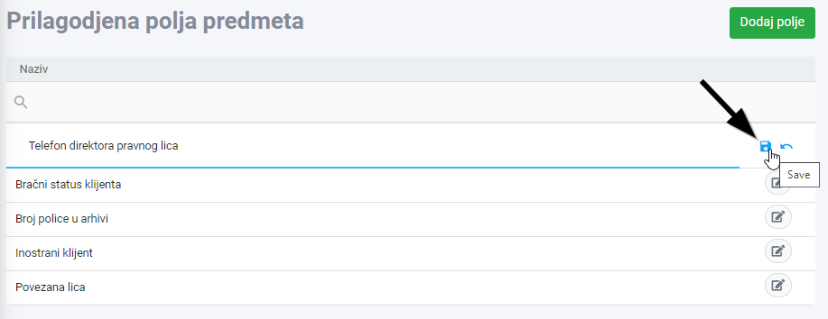

Prilagođena polja vam daju mogućnost da napravite polja sa vama interesantnim podacima, vezane za predmete, a kojih nema trenutno u Legalistik aplikaciji.
Na primjer, želite svakom predmetu da dodjelite mjesto, odnosno policu na kojoj se nalazi papirna dokumentacija vezana za taj predmet. Trenutno nema tog polja u među informacijama vezanih za predmet, ali vrlo lako možete da ga dodate.
Da bi dodali novo prilagođeno polje, kliknite na link “Prilagođena polja” unutar Podešavanja u meniju na lijevoj strani i kliknete na dugme “Dodaj polje” u gornjem desnom uglu:

Unesite naziv polja i kliknite na ikonu za snimanje na desnoj strani:

Nakon što dodate novo polje koje vam treba, otiđite u unos/izmjena predmeta, gdje sad možete dodati to polje kao informaciju vezanu za predmet:

Ako želite da to polje bude prikazano u listi predmeta kao kolona koju možete i da filtrirate (recimo hoćete sve predmete koji su na polici 4), pogledajte uputstvo ovdje.